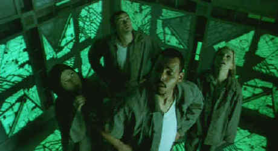

Trimark/1997/90m/WS 1.85
 |
Looking for a way out of the green cube©Trimark |
Co-Written and
directed by Vincenzo Natali. Cube seems inspired by computer games with a definite
nod to the spirit of The Twilight Zone. But the endless repetition that goes on for
ninety minutes would even stretch the bounds of a half-hour TV show. Mathematics plays an
important part in Cube as in another recent successful Indie film Pi. I have
the sense that the math principles are not accurate, but writing majors often can’t
add two plus two. The logic of the Cube space is also questionable. With a
successful script I would not even have been thinking about whether the governing concepts
worked.
Is it the actors or the script? They are totally unconvincing.
Given their horrific predicament, the responses are blatantly false. The claustrophobic
stage required terrific ensemble chemistry, but just as Cube fails to deliver
satisfactory math, it's chemistry is lacking.
The DVD is remarkable in its accomplished replication of Cube’s very
interesting lighting scheme. Each cubic space is defined by its own color wash. It’s
all done under rather dim circumstances, yet detail is maintained over the array of
colors. Sound too is impressive in this low budget effort. It resounds around the
confining spaces with authority. Cube is presented as a special edition with audio
commentary by Natali, co-writer Andre Bijelic, and actor David Hewitt. There’s nice
by-play between the trio with lots of frank explanation. Natali does explain that the math
concept works for a much smaller cube model but their math expert that creating an
accurate model for the 26 by 26 cube would be equivalent to earning another. Also included
are deleted scenes, production designs, cube schematic and storyboards.